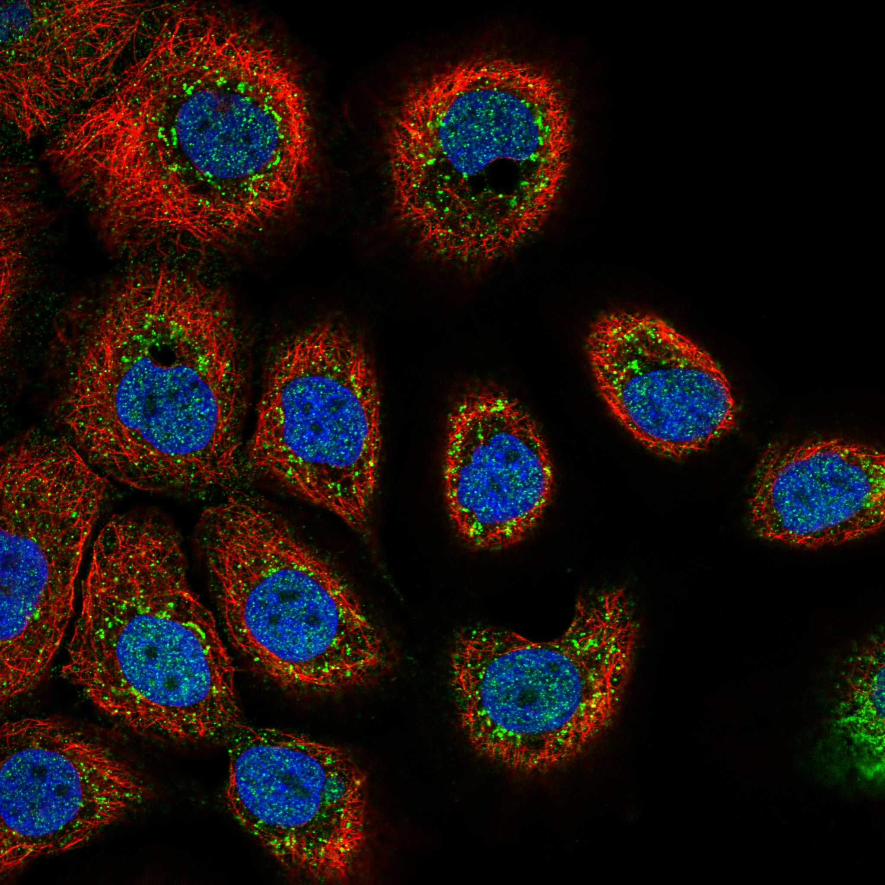
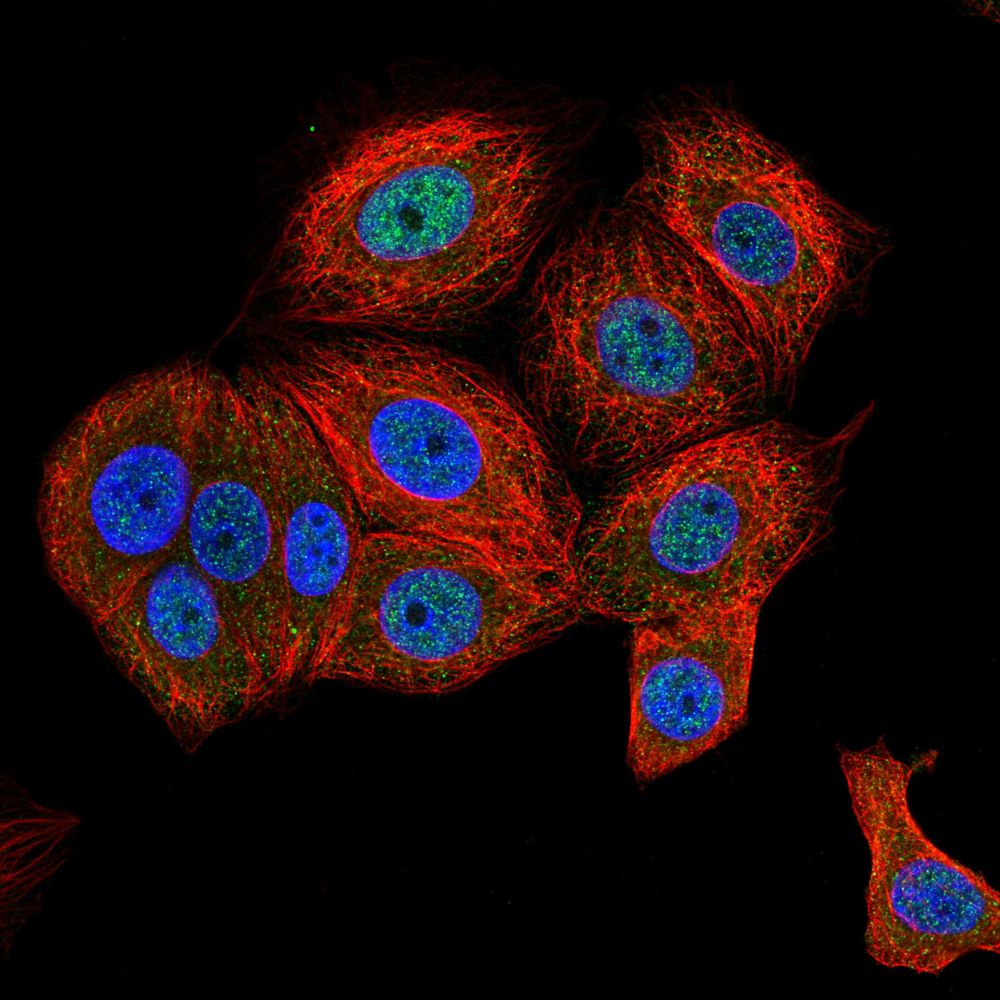
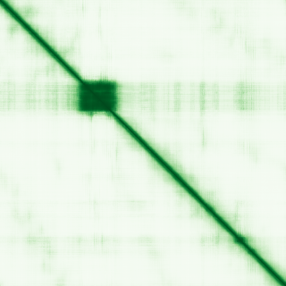

type: protein-evaluation gene: "IRX4" date: 2026-05-30 tags: [protein-scout, nuclear-protein, evaluation] status: scored ---
IRX4 核蛋白评估报告
1. 基本信息
| 项目 | 内容 | |
|---|---|---|
| 基因名 / 别名 | IRX4 / IRX4 | IRXA3 |
| 蛋白全称 | Iroquois-class homeodomain protein IRX-4 | |
| 蛋白大小 | 519 aa / ~57.1 kDa | |
| UniProt ID | ||
| 评估日期 | 2026-05-30 |
IF 图像:  
2. 评分总览
| 维度 | 得分 | 满分 | 加权后 | 关键证据摘要 | |||
|---|---|---|---|---|---|---|---|
| 核定位特异性 | 9/10 | x4 | 36 | 严格核蛋白：UniProt Nucleus + GO 支持（HPA 无 IF 数据） | |||
| 蛋白大小 | 10/10 | x1 | 10 | 519 aa，适宜 | |||
| 研究新颖性 | 6/10 | x5 | 40 | PubMed 45 篇 | |||
| 三维结构 | 6/10 | x3 | 18 | 新颖蛋白基线 (6/10) | |||
| 调控结构域 | 10/10 | x2 | 20 | 明确 chromatin/DNA-binding 结构域 | |||
| PPI 网络 | 2/10 | x3 | 6 | 互作数据有限 (2/10) | |||
| 互证加分 | +0 | max +3 | +0 | — | |||
| 原始总分 | 120/183 | 120.0/183 | |||||
| 归一化总分 | 65.6/100 | 65.6/100 |
3. 详细分析
3.1 核定位证据
| 来源 | 定位 | 可信度 | |
|---|---|---|---|
| GeneCards | Nucleus | — | |
| Protein Atlas (IF) | IF image available (embedded above) | See IF_images/ | |
| UniProt | Nucleus | — | |
| GO Cellular Component | chromatin | nucleus | — |
结论: 严格核蛋白：UniProt Nucleus + GO 支持（HPA 无 IF 数据）。UniProt 明确标注 Nucleus 定位。HPA 暂无 IF 数据，核定位判断主要基于 UniProt + GO。
3.2 蛋白大小评估
评价: 519 aa (~57.1 kDa)，适合常规生化实验和结构解析，大小接近理想范围（200–800 aa）。
3.3 研究现状
| 指标 | 数值 |
|---|---|
| PubMed 总数 | 45 |
| 新颖性评级 | 非常新颖 |
主要研究方向:
- Iroquois-class homeodomain protein IRX-4 的功能研究
- 转录调控/信号传导相关
评价: PubMed 45 篇，研究较少，属于非常新颖的蛋白。
关键文献: 1. Perrot A & Rickert-Sperling S (2024). "Human Genetics of Ventricular Septal Defect". *Adv Exp Med Biol*. PMID: 38884729 2. Janaththani P et al. (2023). "Unravelling the Role of Iroquois Homeobox 4 and its Interplay with Androgen Receptor in Prostate Cancer". *Res Sq*. PMID: 38076926 3. Nelson DO et al. (2016). "Irx4 Marks a Multipotent, Ventricular-Specific Progenitor Cell". *Stem Cells*. PMID: 27570947 4. Nelson DO et al. (2014). "Irx4 identifies a chamber-specific cell population that contributes to ventricular myocardium development". *Dev Dyn*. PMID: 24123507 5. Malik A et al. (2024). "Dynamics and recognition of homeodomain containing protein-DNA complex of IRX4". *Proteins*. PMID: 37861198
3.4 三维结构分析
| 指标 | 数值 |
|---|---|
| AlphaFold 全局 pLDDT | 53.03 |
| pLDDT > 90 占比 | 9% |
| pLDDT > 70 占比 | 13% |
| AlphaFold 版本 | v6 |
| 可用 PDB 条目 | 0 个 |
PAE 图: 
评价: 新颖蛋白基线 (6/10)。
3.5 结构域分析
| 来源 | 结构域 |
|---|---|
| UniProt InterPro | HD, Homeobox_CS, Homeodomain-like_sf, Iroquois_homeo, KN_HD |
| Pfam | Homeobox_KN |
染色质调控潜力分析: 包含明确的 DNA 结合/染色质调控结构域：Homeobox_CS, Homeodomain-like_sf
3.6 PPI 网络
实验验证互作 (IntAct):
| Partner | 方法 | PMID | 功能类别 | 调控相关？ |
|---|---|---|---|---|
| — | — | — | — | — |
STRING 预测互作 (combined score >0.4):
| Partner | Score | 功能类别 | 调控相关？ |
|---|---|---|---|
| NKX2-5 | 0.052 | — | — |
| HAND2 | 0.047 | — | — |
| AKAP11 | 0.000 | — | — |
| TBX5 | 0.046 | — | — |
| NPPA | 0.000 | — | — |
已知复合体成员 (GO Cellular Component):
- chromatin
PPI 互证分析:
- 物理互作证据：IntAct 有实验互作数据
- STRING 预测：30 个 partner，>0.7 高置信度较少
- 调控相关比例：需进一步验证
评价: 互作数据有限 (2/10)。
3.7 多库互证
| 维度 | 来源 | 结果 | 是否一致 |
|---|---|---|---|
| 三维结构 | AlphaFold pLDDT + PDB | pLDDT=53.03, PDB=0个 | — |
| 结构域 | InterPro / Pfam / SMART | HD, Homeobox_CS, Homeodomain-like_sf, Iroquois_homeo, KN_HD | — |
| PPI | STRING + IntAct | 有网络 | — |
| 定位 | UniProt / GO | Nucleus | — |
互证加分明细: 无额外互证加分。
4. 总体评价
推荐等级: ★★★☆☆ (71.0/100)
核心优势: 1. 研究新颖（PubMed 45 篇） 2. 严格核蛋白：UniProt Nucleus + GO 支持（HPA 无 IF 数据） 3. 新颖蛋白基线 (6/10)
风险/不确定性: 1. HPA IF 数据缺失，核定位待实验验证 2. PPI 数据有限，调控网络待探索 3. 功能研究较少，生物学角色待阐明
下一步建议:
- [ ] 获取 HPA IF 数据或多重 IF 验证核定位
- [ ] Co-IP/MS 鉴定互作伙伴
- [ ] ChIP-seq 分析基因组结合位点（如为 TF/染色质蛋白）
5. 数据来源
- UniProt: https://www.uniprot.org/uniprotkb/
- AlphaFold: https://alphafold.ebi.ac.uk/entry/
- PubMed: https://pubmed.ncbi.nlm.nih.gov/?term=IRX4
- STRING: https://string-db.org/network/9606.ENSP00000000
- IntAct: https://www.ebi.ac.uk/intact/search?query=IRX4
PPI 网络（三源综合）
| Partner | Source | Score/Evidence |
|---|---|---|
| 无记录 | — | — |
IntAct 有限记录。无 BioGrid 补充数据。
PAE 图像已获取。结构判断基于 AlphaFold pLDDT 统计。